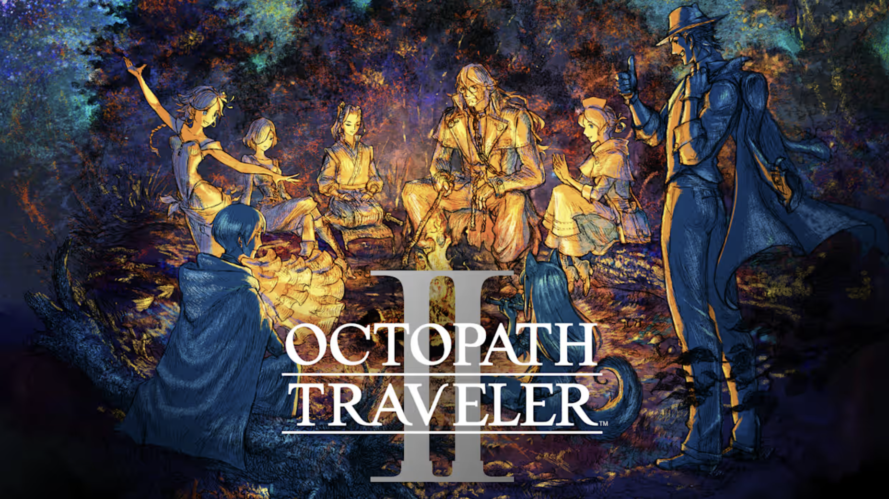

Octopath Traveler 2
Octopath Traveler 2 is one of the most solid RPGs I've ever played. Following it's predecessor; Octopath 2 follows 8 different protagonists, or "Travelers" as they are called, each coming form their own unique walk of life as they travel throughout the land of Solistia as each one sets out on an adventure to achieve their own goals.
The game lets you pursue each of these 8 narratives in what ever order one wishes and the world is free to explore with little to no road blocks aside from enemy level spikes. I personally found jumping from one Traveler to another and another again to be the most enjoyable way to proceed through the story as it led to more variety as there's a nice variety of tone and themes among each of the stories. On the light hearted side you have Agnea the dancer, who whishes to follow her mother's footsteps of being a star. While on the more darker side of things you have Osvald the scholar, a man wrongfully imprisoned for the murder of his wife and daughter with his eyes set on revenge.
Exploring the world is also such a feast for the eyes and the ears. The game nails the HD-2D style with some absolutely gorgeous scenery and the soundtrack is full of majesty and wonder. Octopath 2 also introduces a day and night cycle, where different NPCs will only appear at certain times of the day. Each Traveler also two unique abilities called Path Actions, that allow them to interact with the many NPCs throughout the land. Certain travelers can recruit NPCs to participate in combat, while others can gather information about them. Of which I found particularly enjoyable, as there are many NPCs with wild lore that goes a long way in building up Solistia as a real lived in world. The game is also very rewarding for those to take the time to go off the beaten path. Optional dungeons are a plenty, and the game makes sure to reward you for your curiosity.
Combat is turn based and revolves around the Break and Boost system. Enemies have certain physical and elemental weakness, and attacking these weakness will lower their shield amount. Once their shield reaches zero, the enemy will be "Broken" leading them be extra vulnerable to attacks. Each party member also has "Boost" points that they can expend to strengthen abilities or attack multiple times. One of the most fun parts of strategy in this came is deciding whether it's better to boost in order to break the opponent or save them for after the enemy is broken and unleash massive damage. Each Traveler also has their own unique combat ability ranging from extra damaging attacks to more supportive effects.
All in all, Octopath Traverler 2 improves on the strong concept of the original with more hooking stories and more refined gameplay. This game is a must for anyone who is a fan of RPGs